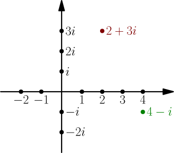
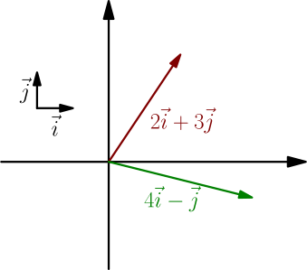
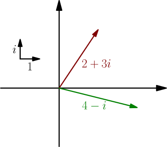
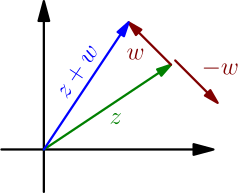

Introduction to Complex Numbers¶
The basic idea with complex numbers is to introduce a "number" called $i$ which behaves so that $i^2 = -1$. This is not a number in the usual sense, because $x^2$ is not negative for any real number $x \in \mathbb{R}$. This $i$ is something else.
The usual numbers will be called real numbers. The results of multiplying real numbers with $i$, such as $2i$ and $-0.6i$, are called imaginary numbers. A complex number is the result of adding a real number and an imaginary number, such as $2+3i$ or $4-5i$. The set of complex numbers is denoted with $\mathbb{C}$, just like $\mathbb{R}$ is the set of real numbers.
Note that any real number $r$ is also a complex number $r+0i$, and so is any imaginary number $ri=0+ri$.
A common way to visualize complex numbers is to think of them as points in the 2D plane so that $a + bi$, with $a,b \in \mathbb{R}$, corresponds with the point $(a,b)$.

This is also a common way to define complex numbers; they are just pairs of two real numbers $(a,b)$, also written as $a + bi$. There is an exception though: in the case $b=0$, the complex number $a + 0i$ and the real number $a$ are the same, even though a real number $a$ can't be equal to a pair of real numbers $(a,b)$.
In this context, the $x$ axis is called the real axis because it contains all the real numbers, and similarly, the $y$ axis is called the imaginary axis.
A 2D vector is also a pair of real numbers, so we can also think of complex numbers as vectors, so that $a + bi$ corresponds with $a\I + b\J$. Note that $i$ as a complex number means "up", but $\I$ as a vector means "right".


Borrowing operations from vectors¶
We can add and subtract any 2D vectors $a\I+b\J$ and $x\I+y\J$ with these rules: $$ \begin{align} (a\I + b\J) + (x\I + y\J) &= (a+x)\I + (b+y)\J \\ (a\I + b\J) - (x\I + y\J) &= (a-x)\I + (b-y)\J \end{align} $$ Multiplying a real number $c$ and a 2D vector works like this: $$ c(a\I+b\J) = (ca)\I + (cb)\J $$ Let's use these operations the same way with complex numbers so that the complex number $a + bi$ corresponds with the vector $a\I + b\J$.
Let $a+bi$ and $x+yi$ be complex numbers, and let $c$ be a real number. Addition and subtraction of complex numbers is defined like this: $$ \begin{align} (a + bi) + (x + yi) &= (a+x) + (b+y)i \\ (a + bi) - (x + yi) &= (a-x) + (b-y)i \end{align} $$ Multiplying a real number and a complex number is defined like this: $$ c(a+bi) = (ca)+(cb)i $$
With these definitions, writing $a+bi$ to denote a complex number actually makes sense; $bi$ is a multiplication of a real number and a complex number, and $a+bi$ adds the complex numbers $a=a+0i$ and $bi=0+bi$.
Also note that the operations defined above are compatible with the corresponding real number operations; if $a$ and $b$ are real numbers, then the above operations with $a+0i$ and $b+0i$ give the same results as the usual real number operations:
- The complex number addition $(a + 0i)+(b + 0i)$ gives $(a+b) + 0i$, which is just the real number addition $a+b$.
- We similarly get $(a + 0i)-(b + 0i)=(a-b)+0i$.
- For multiplication, we calculate $$ a(b+0i) = (ab) + (a \cdot 0)i = ab + 0i. $$ Here $a(b+0i)$ is a multiplication of a real number and a complex number, and all other multiplications are real number multiplications.
Just like with real numbers and vectors, $-w$ means $0-w$ when $w$ is a complex number, so $$ -(a+bi) = (-a) + (-b)i $$ as expected.
Because these operations are actually just the usual vector operations, they satisfy familiar rules, such as $(z+v)-w = z+(v-w)$, and they look just like the vector operations:

Note that we have not defined yet what multiplying two complex numbers does, so writing $i^2 = -1$ doesn't actually make sense yet. We'll come back to this later.